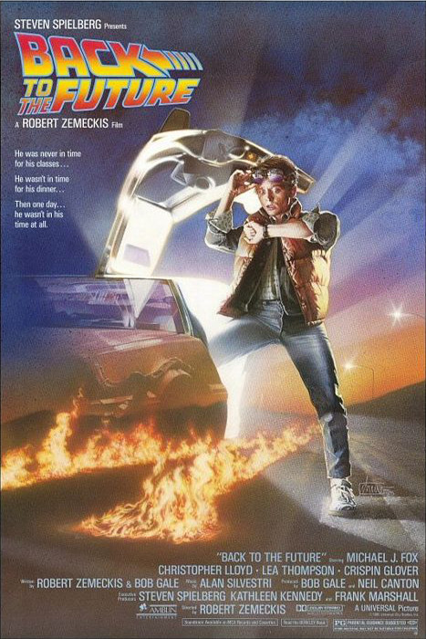

|
Esaretin BedeliEsaretin Bedeli, Andy ve Red isimli iki mahkumun parmaklıklar ardında kurdukları dünyanın hikayesini anlatıyor. Andy Dufresne, genç ve başarılı bir bankerdir. Karısını ve karısının sevgilisini öldürmek suçundan yargılanır ve ömür boyu hapis cezası alır. Shawsank Hapishanesi'nde dayak, işkence, tecavüz, her türlü durum yaşanmaktadır fakat Andy gene de hayata bağlı ve iyimserdir. Bu tutumu etrafındakileri de etkiler. Andy umutlu bakış açısıyla çevresindeki tüm mahkumları, parmaklıklar arkasında bile özgür bir yaşam olabileceğine inandırır. Andy'nin bu çabalarına ortak olacak bir arkadaşı da olacaktır: Red.Bir Stephen King uyarlaması olan filmde Morgan Freeman ve Tim Robbins başrolde. Film, 1995'te, aralarında en iyi film adaylığı da olmak üzere tam 7 dalda Oscar'a aday gösterildi. |

|
Yeşil YolYeşil Yol, bir hapishane görevlisi ile bir mahkumun öyküsünü anlatıyor. Paul Edgecomb'un hapishanedeki görevi, idama mahkum edilen mahkumları son yolculuklarına uğurlamaktır. Çalıştığı yıllar içerisinde yüzlerce mahkumu idam etmiştir. Bir gün John Coffey isimli korkutucu görünümlü bir adamla tanışır. Ancak Coffey'in bu ürkütücü görünümünün altında oldukça saf bir ruh yatmaktadır. Coffey, iki küçük kız çocuğunun katil davasında yargılanmaktadır. Coffey'in günden güne gün yüzüne çıkan dünya ötesi güçleri, karakteri hakkında yeni ipuçlarını anbean ortaya çıkaracaktır. |
|  |
Geleceğe DönüşGeleceğe Dönüş'te, deli dolu bilimadamı Dr. Brown zamanda yolculuğu mümkün kılan bir araba geliştirir. Bu makineyi ilk kullanan genç Marty ufak bir zamanlama yanlışıyla gelecek yerine geçmişe gönderilir. Otuz yıl öncesine dönen Marty’nin burada yaptığı bir hamle, kendi kaderini ilginç bir noktaya sürükleyebilecek bir hataya sebebiyet verir. Artık Marty’nin yapması gereken tek şey kendi doğumunu bile engelleyecek bu hatayı bir şekilde düzeltmeye çalışmak olacaktır. Zamanda yolculuk temalı filmlerin atalarından olan ‘Geleceğe Dönüş’ hem yönetmeni Robert Zemeckis’in hem de dönem sinemasının şahlandığı anlardan biridir. Gösterime girdiği dönem insanlığını bir hayli heyecanlandıran ve kısa bir süre sonra kült mertebesine erişmiş, o güne kadar hep tv dizilerinde yer alan başrol oyuncusu Michael J. Fox'a da büyük ün getirmiştir. |